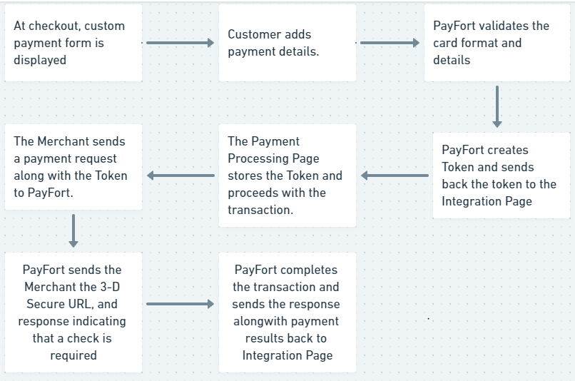

Integrate With PayFort
PayFort helps you to build a robust payment system for your merchant site. With the help of PayFort you can collect payment information conveniently and securely. It offers your customer the choice to pay in multiple currencies. Your customers can also select from available payment methods such as 3D secure, Apple Pay, Visa Checkout or MasterPass.
You can get started with PayFort by visiting this link
PayFort offers you two approaches for integrations with your merchant site as mentioned below:
PayFort Payment Features
-
With PayFort You need not redirect your customers to third party website for payment and they will be able to pay on the payment page of your website.
-
You are no longer required to get your website PCI-Compliant. Since PayFort is PCI-DSS compliant it means your business transactions will be PCI-Compliant automatically.
-
It offers payment solutions for various shopping cart applications including your own in house shopping cart application.

Figure 1
Shopping cart applications supported by PayFort
Using PayFort iFrame
PayFort iFrame help you to create a payment form which is customizable. It gives the customer to provide their payment details on your site checkout page or in your mobile based app. Once the details are entered PayFort generates a secure single use token through tokenization process. This token can be used to request a payment without the need to store any customer's payment information in your site.
PayFort processes the transaction and returns the results back to the your site through invisible redirection.

Please refer figure 2.
 Figure 2 - Using PayFort iFrame
Figure 2 - Using PayFort iFrame
How it Works - Overview
1. The payment details form will appear to your Customer encapsulated inside an iframe that has the same look and feel of as that of your website.
2. PayFort then receives the payment details and sends you the confirmation to complete the transaction.
Note - You have the option to redirect the Customer directly to the payment details form.
Integration Flow

-
The customer begins the checkout process on your website.
-
The payment page encapsulated inside iFrame is displayed. Then the Customer enters the card’s details on the payment page.
-
PayFort checks the card details.
-
PayFort creates a token for the Customer transaction and sends it to the payment page.
-
The Payment page then sends a JSON request along with the token to PayFort.
-
In case your page receives from PayFort a 3-D Secure URL “3ds_url”, and response indicating that a 3Ds check is required:
a. Your payment page redirects the Customer to the ACS to check his card enrollment.
b. The Customer enters authentication data on the ACS platform.
c. The ACS performs authentication of the Customer’s data and sends the authentication results to PayFort. -
PayFort completes the operation based on the 3-D Secure response and returns the response to your payment page.
-
PayFort sends the payment results to your site.
Note -
- In this case, PayFort returns status “20: On hold” and message “064: 3-D Secure check requested”. For example, PayFort is waiting for your payment page to authenticate the Customer.*
- If you include the “token_name” parameter in the request and this Token already has a successful Authorization, then the card number (masked) and expiry date will be displayed in their allocated fields.
- If the Token is sent by you, it will be generated with the same name as sent by your page.
- Payment processing page, payment form and payment details form all refer to payment page on your site where customer will enter card details.
2. Using Custom Payment Form
You can also design and develop your own custom for for collecting the card details. The card details are sent directly to PayFort and substituted with Token. You can then use this Token to complete the transaction.

How it works - overview
1. You develop your own custom payment details form that collects the card details (credit card number, expiry date, CVV), and sends the request to PayFort. 2. PayFort receives the payment details and returns the response which includes the Token to your payment processing page. 3. You use the token to complete the Authorization or Purchase operation.
Note - You should develop a form that does not send data to your website but directly submits the form to PayFort.*
Integration Flow

1. The Customer begins the checkout process on your website.
2. Your website displays the custom payment form to collect the card’s details. Then the Customer enters the card’s details on the payment page.
3. PayFort validates the card format.
4. PayFort creates a token for the card details and sends it back to your payment page.
5. Payment page stores the Token and proceeds with the transaction.
6. Payment page sends a payment request along with the Token to PayFort.
7. PayFort sends the 3-D Secure URL, and response indicating that a check is required:
a. Payment page redirects the Customer to check his card enrollment. b. The Customer enters authentication data. c. 3-D Secure authentication is completed and PayFort receives the authentication results.
Note - In this case, PayFort returns status “20: On hold” and message “064: 3-D Secure check requested”. For example, PayFort is waiting for the payment page to authenticate the Customer.
8. PayFort completes the operation based on the 3-D Secure response and returns the response to the website.
9. The payment results are displayed to the Customer.
Note -
-
If the Token is sent by the payment page, it will be generated with the same name sent by the website.
-
Payment processing page, payment form and payment details form all refer to payment page on your site where customer will enter card details.
Integration Page - Operations
Operations URLs
Test Environment URL
https://sbpaymentservices.payfort.com/FortAPI/paymentApi
Production Environment URL
https://paymentservices.payfort.com/FortAPI/paymentApi
Parameters Submission Type
REST POST request using JSON.
How to add the Tokenization service on the Payment Page?
The Tokenization service is applicable to be integrated through the payment page through the below steps: 1. The Customer processes the first PURCHASE/ AUTHORIZATION payment successfully. 2. The payment page will receive a token_name in the response. This token_name should be considered as a permanent token name, and it can be used in the future customer’s payments by submitting the token_name in the next PURCHASE/ AUTHORIZATION payment with card_security_code parameter. 3. No need to open the Payment Details Form to fill all the card details again in the next checkouts.
If the Customer wants to update/ delete his card, you should check Update Token section.
Note Please refer to section FORT Tokenization Service for more details about the token name parameter.
Payment Page Customization
This is a list with all customizable CSS classes on the basic merchant page:
- The
Wrapperclass: responsible for the total width of the form container and the background. - The
Containerclass: responsible for the form’s shape and width. - The
Popoverclass: responsible for the error messages. - The
Half-containerclass: used to merge the date and CVV fields into one block if needed. - The
Inputclass: is the container of each single input field. - The
Payclass: responsible for the submit button. - The
Visa/ MasterCardclasses: used to change the color of the Visa/ MasterCard colors.
Note - You can always create multiple theme files that will enable you to switch freely and easily between them when necessary.
Note- “Theme” files can be uploaded from the back-office using the Payment Page template screen.